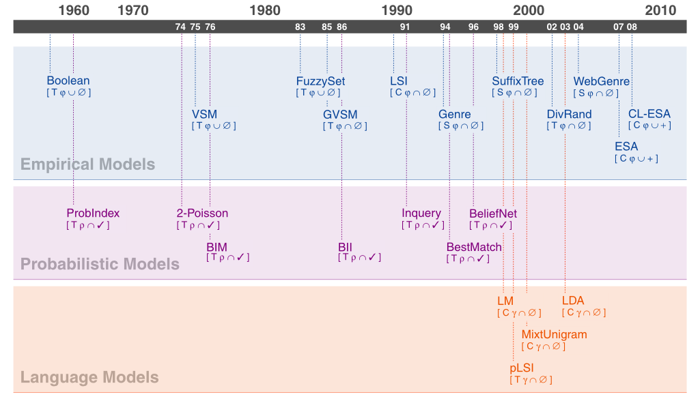

<script type="application/ld+json">
{
  "@context":"http://schema.org/",
  "@type":"Research",
  "name":"Retrieval Models",
  "description":"",
  "url":"https://webis.de/research/retrieval-models.html",
  "keywords":[
    "Retrieval Models"
  ], 
  "creator":[
    {
      "@type":"Organization",
      "url":"https://webis.de/",
      "name":"The Web Technology & Information Systems Network",
      "alternateName":"Webis"
    },
    {
        "@type":"Person", 
        "url":"http://www.uni-weimar.de/medien/webis/people/#stein",
        "affiliation":"Bauhaus-Universit\u00e4t Weimar", 
        "name":"Stein, Benno"
    },
    {
        "@type":"Person", 
        "url":"http://www.uni-weimar.de/medien/webis/people/#potthast",
        "affiliation":"Bauhaus-Universit\u00e4t Weimar", 
        "name":"Potthast, Martin"
    },
    {
        "@type":"Person", 
        "url":"http://www.uni-weimar.de/medien/webis/people/#trenkmann",
        "affiliation":"Bauhaus-Universit\u00e4t Weimar", 
        "name":"Trenkmann, Martin"
    }
  ],
  "includedInDataCatalog":{
  },
  "distribution":[
  ]
}
</script>

<main class="uk-section uk-section-default">
    <div class="uk-container">
        <h1>Retrieval Models</h1>

        <ul class="uk-list">
            <!-- Comment out sections you do not provide -->
            <li><span data-uk-icon="chevron-down"></span> <a href="#synopsis">Synopsis</a></li>
            <li><span data-uk-icon="chevron-down"></span> <a href="#people">People</a></li>
        </ul>
    </div>

    <div class="uk-container uk-margin-medium">
        <!--
        SECTION Synopsis
        -->
        <h2 id="synopsis">Synopsis</h2>

        <p>To overview and compare the characteristics of well-known retrieval models we have developed an interactive map, shown below. By clicking on a model acronym in the map a short description of the respective retrieval model is displayed on the right-hand side. In our map a retrieval model is either empirical, probabilistic, or of language model type. Below a model's acronym you find a code in the form of a quadrupel, [1&nbsp;2&nbsp;3&nbsp;4], which hints the model's characteristics along four dimensions: <b>(1)</b>&nbsp;<b>Feature type</b>, which defines the basic principle to capture a document's content; possible values include document <i>terms</i> [T], latent or explicit taxonomic <i>concepts</i> [C], or an (often NLP-based) method yielding <i>special</i> [S] features. <b>(2)</b>&nbsp;Foundation of the <b>Retrieval status value (RSV) computation</b>; possible values include feature vector <i>similarity </i> [&#966;], <i>relevance</i> [&#961;] assessment, or the ability of a document to <i>generate</i> [&#947;] a query. <b>(3)</b>&nbsp;Dependency on a <b>Closed world</b>; possible values are <i>open</i> [&#8746;], where the document collection need not to be completely given, and <i>closed</i> [&#8745;], where the collection must be completely given to compute global characteristics. <b>(4)</b>&nbsp;<b>External knowledge</b>, if used at all; possible values include  <i>none</i> [&#8709;], <i>user feedback</i> [&#10003;], e.g. for relevance assessment purposes, and an <i> additional</i> [+] document collection, e.g., for computing collection-relative document similarities. Our scheme is not intended to exactly differentiate between all particularities of a model, but shall pinpoint retrieval model strengths and weaknesses. If you find it useful, if you have hints for its improvement, or if you detect incorrect statements please drop us a mail. Finally, we kindly ask you to refer to the overview using the related publication below.</p>

<div>
    <div>
        
        <map id="retrieval-models-map" name="retrieval-models-map">
            <area shape="rect" alt="pLSI" href="#plsi-box" coords="540,386,593,415" />
            <area shape="rect" alt="MixtUnigram" href="#mixtunig-box" coords="553,349,629,379" />
            <area shape="rect" alt="LDA" href="#lda-box" coords="595,313,649,344" />
            <area shape="rect" alt="LM" href="#lm-box" coords="528,313,580,343" />
            <area shape="rect" alt="BeliefNet" href="#beliefnet-box" coords="499,220,552,249" />
            <area shape="rect" alt="BestMatch" href="#bestmatch-box" coords="475,258,535,284" />
            <area shape="rect" alt="Inquery" href="#inquery-box" coords="425,221,475,249" />
            <area shape="rect" alt="BII" href="#bii-box" coords="355,257,410,284" />
            <area shape="rect" alt="BIM" href="#bim-box" coords="216,257,269,281" />
            <area shape="rect" alt="2-Poisson" href="#poisson-box" coords="184,220,245,247" />
            <area shape="rect" alt="ProbIndex" href="#probindex-box" coords="67,218,134,249" />
            <area shape="rect" alt="ESA" href="#esa-box" coords="653,147,707,176" />
            <area shape="rect" alt="CL-ESA" href="#cl-esa-box" coords="668,114,720,140" />
            <area shape="rect" alt="WebGenre" href="#webgenre-box" coords="610,78,673,106" />
            <area shape="rect" alt="DivRand" href="#divrand-box" coords="579,114,635,141" />
            <area shape="rect" alt="SuffixTree" href="#suffixtree-box" coords="522,78,582,106" />
            <area shape="rect" alt="Genre" href="#genre-box" coords="466,112,520,141" />
            <area shape="rect" alt="LSI" href="#lsi-box" coords="415,77,467,106" />
            <area shape="rect" alt="GVSM" href="#gvsm-box" coords="341,113,394,142" />
            <area shape="rect" alt="FuzzySet" href="#fuzzyset-box" coords="311,78,371,106" />
            <area shape="rect" alt="VSM" href="#vsm-box" coords="203,113,253,141" />
            <area shape="rect" alt="Boolean" href="#boolean-box" coords="47,79,100,106" />
        </map>
    </div>

    <!-- LEGEND -->
    <table class="uk-table uk-table-small uk-width-auto">
        <tr>
            <th colspan="2">Legend [1 2 3 4]</th>
        </tr>
        <tr>
            <td>(1) Feature type</td>
            <td>
                <ul class="inline-list">
                    <li><span class="inline-item-bullet">T</span>terms</li>
                    <li><span class="inline-item-bullet">C</span>concepts</li>
                    <li><span class="inline-item-bullet">S</span>special</li>
                </ul>
            </td>
        </tr>
        <tr>
            <td>(2) RSV computation</td>
            <td>
                <ul class="inline-list">
                    <li><span class="inline-item-bullet">&phi;</span>similarity</li>
                    <li><span class="inline-item-bullet">&rho;</span>relevance</li>
                    <li><span class="inline-item-bullet">&gamma;</span>generation</li>
                </ul>
            </td>
        </tr>
        <tr>
            <td>(3) Closed world</td>
            <td>
                <ul class="inline-list">
                    <li><span class="inline-item-bullet">&cup;</span>open collection</li>
                    <li><span class="inline-item-bullet">&cap;</span>closed collection</li>
                </ul>
            </td>
        </tr>
        <tr>
            <td>(4) External knowledge</td>
            <td>
                <ul class="inline-list">
                    <li><span class="inline-item-bullet">&#8709;</span>none</li>
                    <li><span class="inline-item-bullet">&#x2713;</span>user feedback</li>
                    <li><span class="inline-item-bullet">+</span>additional collection</li>
                </ul>
            </td>
        </tr>
    </table>
</div> <!-- wrapper -->

<div>
    <div class="popup empirical-model" id="boolean-box">
        <h3>Boolean Model</h3>
        <div>
            <p>The Boolean model represents documents as a set of terms. It's underlying idea is quite intuitive: a term is either present or absent in a document. That way, term weights are all binary, and a query is just a Boolean expression; the similarity of a document to a query is either 1 (relevant) or 0 (not relevant). Drawbacks of the Boolean model include that (1) all words are equally weighted, (2) it only retrieves exact matches, and (3) no ranking on documents is possible. Even though the Boolean model is considered to be the weakest model, it is easy to understand and to implement.</p>
            <br />
            <p>G. Salton, and M.J. McGill. <a href="http://portal.acm.org/citation.cfm?id=576628" title="Introduction to Modern Information Retrieval">Introduction to Modern Information Retrieval</a>. McGraw-Hill Book Co., New York, 1986.</p>
        </div>
    </div>

    <div class="popup empirical-model" id="vsm-box">
        <h3>Vector Space Model</h3>
        <div>
            <p>The Vector Space model (VSM) represents each text document as a vector, where each dimension in the vector is associated with a single word. Because each word is treated as a single dimension, semantic information that is available in the original texts gets lost. The model not only disregards the original word order, but also synonymous and homonymous words can cause problems. For example, consider the synonyms &quot;buy&quot; and &quot;purchase&quot; that have the same meaning, but will be represented as two distinct dimensions in the vector. By contrast, a homonymous word like &quot;crane&quot; refers to several meanings like to a bird or to a machine, but all meanings will be mapped to a single dimension. Thus, information gets lost in both cases. The Generalized Vector Space model adresses those problems.</p>
            <br />
            <p>G. Salton, A. Wong, and C. S. Yang. <a href="http://portal.acm.org/citation.cfm?id=361220&amp;coll=portal&amp;dl=ACM&amp;ret=1" title="VSM">A Vector Space Model for Automatic Indexing</a>. In Commun. ACM, 18(11):613&ndash;620, 1975.</p>
        </div>
    </div>

    <div class="popup empirical-model" id="fuzzyset-box">
        <h3>Fuzzy Set Model</h3>
        <div>
            <p>In mathematics, a fuzzy set is defined as a collection of elements where the boundaries are not well-defined; they are fuzzy. Then, the Fuzzy Set model itself can be seen as an extension to the classic Boolean model. Now, each query term defines a fuzzy set of documents and each document has a degree of membership in this set instead of being just present or absent. Furthermore, classic retrieval models make the assumption that index terms are independent of each other, but in reality, that is not the case. For example, consider the two phrases &quot;We do what we like&quot; and &quot;We like what we do.&quot; Hence, Fuzzy Set models utilize a term-term correlation matrix that not only maps relationships between terms, but also returns the fuzzy set of documents for a query term.</p>
            <br />
            <p>Y. Ogawa, T. Morita, and K. Kobayashi. <a href="http://portal.acm.org/citation.cfm?id=106292" title="Fuzzy Set Model">A fuzzy document retrieval system using the keyword connection matrix and a learning method</a>. In Fuzzy Sets and Systems, 39(2):163&ndash;179, 1991.</p>
        </div>
    </div>

    <div class="popup empirical-model" id="gvsm-box">
        <h3>Generalized Vector Space Model</h3>
        <div>
            <p>The Generalized Vector Space Model (GVSM) addresses the orthogonality assumption of the Vector Space Model (VSM) in information retrieval. The orthogonality assumption refers to the independence of each term in the VSM. For example, the semantic similarity between the synonyms &quot;house&quot; and &quot;home&quot; would not be treated any differently to unrelated word pairs in the VSM. The GVSM captures the semantic similarity between terms and deprecates the pairwise orthogonality assumption by introducing term to term correlations.</p>
            <br />
            <p>S. K. M. Wong, W. Ziarko, and P. C. N. Wong. <a href="http://portal.acm.org/citation.cfm?id=253506" title="GVSM">Generalized Vector Spaces Model in Information Retrieval</a>. In Proceedings of the Eighth Annual International ACM SIGIR Conference on Research and Development in Information Retrieval, pages 18&ndash;25, Montreal, Canada, 1985.</p>
        </div>
    </div>

    <div class="popup empirical-model" id="lsi-box">
        <h3>Latent Semantic Indexing</h3>
        <div>
            <p>The objective of Latent Semantic Indexing (LSI) is to overcome two problems with bag-of-words information retrieval. First, the user may specify valid synonyms of words that are not contained in relevant documents. Second, documents with matching words may be returned with alternative definitions to those intended by the user. The LSI model attempts to address these problems with a statistical approach. That is, a large matrix is used to form a &quot;semantic space&quot; where related term-document pairs can be organized together. Then the &quot;singular value decomposition&quot; mathematical technique is applied to organize the patterns in the data together.</p>
            <br />
            <p>S. C. Deerwester, S. T. Dumais, T. K. Landauer, G. W. Furnas, and R. A. Harshman. <a href="https://dx.doi.org/10.1002%2F%28SICI%291097-4571%28199009%2941%3A6%3C391%3A%3AAID-ASI1%3E3.0.CO%3B2-9" title="LSI">Indexing by Latent Semantic Analysis</a>. In Journal of the American Society of Information Science, 41(6):391&ndash;407, 1990.</p>
        </div>
    </div>

    <div class="popup empirical-model" id="genre-box">
        <h3>Genre Classification</h3>
        <div>
            <p>Genre classification refers to classifying content into categories, such as press, fiction, and scholarly work. This can be applied to information retrieval to allow lists of results to be filtered according to genre. Discriminant analysis is a method from descriptive statistics that can be applied here. This method aims to develop discriminant functions using pre-categorized data on input parameters based on parts of speech, word frequencies, and language statistics. Then unseen samples can be categorized on the developed functions.</p>
            <br />
            <p>J. Karlgren and D. Cutting. <a href="http://portal.acm.org/citation.cfm?id=991324" title="Genre">Recognizing Text Genres with Simple Metrics using Discriminant Analysis</a>. In Proceedings of the Fifteenth Conference on Computational Linguistics, pages 1071&ndash;1075, Kyoto, Japan, 1994.</p>
        </div>
    </div>

    <div class="popup empirical-model" id="suffixtree-box">
        <h3>SuffixTree</h3>
        <div>
            <p>The suffix tree model uses a tree to represent a document where paths from the root node to a leaf node encode a word-level suffix of the document string. That way, the representation incorporates information about word order. To compare two documents, a tree similarity measure is employed that measures how many paths that start at the root node are shared between two suffix trees. The suffix tree model effectively implements a similarity assessment based on all n-grams of two documents where n ranges from 1 (as in the Vector Space model) to the length of the longer document. This suggests quadratic time and space requirements, however, suffix trees can be constructed and stored in linear time and space.</p>
            <br />
            <p>Sven Meyer zu Ei&szlig;en, Benno Stein, and Martin Potthast. <a href="https://webis.de/publications.html#filter:bibid:stein_2005b" title="Suffix Tree Model">The Suffix Tree Document Model Revisited</a>. In Klaus Tochtermann and Hermann Maurer, editors, Proceedings of the 5th International Conference on Knowledge Management (I-KNOW 05), Graz, Austria, Journal of Universal Computer Science, pages 596&ndash;603, July 2005. Know-Center. ISSN 0948-695x.</p>
        </div>
    </div>

    <div class="popup empirical-model" id="divrand-box">
        <h3>DivRand</h3>
        <div>
            <p>Divergence from randomness models identify index terms within documents relative to a collection of documents: each term found in a document is weighted by computing a divergence score for the within-document frequency from the term's presumed probability distribution in a collection of documents. Then, the term weights are smoothed by considering a term's information gain within the subset of documents that contain the term at least once (the elite-set). For example, the term "atom" appears only in a fraction of all documents and thus sets those documents apart, however, within the physics domain it still does not carry much information about a paper's topic. Finally, the term weights are normalized regarding document length.</p>
            <br />
            <p>Gianni Amati and Cornelis Joost Van Rijsbergen. <a href="http://portal.acm.org/citation.cfm?id=582416" title="Divergence from Randomness Model">Probabilistic Models of Information Retrieval based on Measuring the Divergence from Randomness</a>. ACM Trans. Inf. Syst. 20, 4 (October 2002), 357&ndash;389.</p>
        </div>
    </div>

    <div class="popup empirical-model" id="webgenre-box">
        <h3>WebGenre</h3>
        <div>
            <p>Models that aim at encoding a web page's genre rather than its topic are called Web Genre models. These models employ, among others, features related to a web page's presentation, the writing style of its contents, and vocabulary usage therein. Particularly the latter features have been found useful, since the core vocabulary of often observed terms within a particular genre differs from that of other genres.</p>
            <br />
            <p>Benno Stein and Sven Meyer zu Ei&szlig;en. <a href="https://webis.de/publications.html#filter:bibid:stein_2008i.pdf" title="Web Genre Models">Retrieval Models for Genre Classification</a>. Scandinavian Journal of Information Systems (SJIS), 20 : 1, pages 91&ndash;117, 2008. ISBN 0905-0167.</p>
        </div>
    </div>

    <div class="popup empirical-model" id="esa-box">
        <h3>ESA</h3>
        <div>
            <p>The Explicit Semantic Analysis (ESA) was introduced to compute the semantic relatedness of natural language texts. In this respect, it yields significant improvements compared to the BOW model or LSI. The ESA represents a document as a high-dimensional vector, where the dimensions quantify the pairwise similarities between the document and the documents of some reference collection (e.g., Wikipedia). The similarities are quantified under the BOW model. The relatedness of two documents is assessed by the cosine similarity between the corresponding vector representations.</p>
            <br />
            <p>E. Gabrilovich and S. Markovitch. <a href="http://gabrilovich.com/publications/papers/Gabrilovich2007CSR.pdf" title="ESA">Computing Semantic Relatedness using Wikipedia-based Explicit Semantic Analysis</a>. In Proceedings of IJCAI 2007.</p>
        </div>
    </div>

    <div class="popup empirical-model" id="cl-esa-box">
        <h3>CL-ESA</h3>
        <div>
            <p>The Cross-Language Explicit Semantic Analysis (CL-ESA) is a multilingual generalization of the ESA. The CL-ESA exploits a document-aligned multilingual reference collection (e.g., Wikipedia) to represent a document as a language-independent concept vector. The relatedness of two documents in different languages is assessed by the cosine similarity between the corresponding vector representations.</p>
            <br />
            <p>M. Potthast, B. Stein, and M. Anderka. <a href="https://webis.de/publications.html#filter:bibid:stein_2008b.pdf" title="CL-ESA">A Wikipedia-Based Multilingual Retrieval Model</a>. In Proceedings of ECIR 2008.</p>
        </div>
    </div>

    <!-- PROBABILISTIC MODELS -->
    <div class="popup probabilistic-model" id="bii-box">
        <h3>BII</h3>
        <div>
            <p>The Binary Independence Indexing (BII) model is a variation of the BIM, and regards one document in relation to a number of queries. The probabilistic weights for the index terms of a document are estimated based on sample of queries for this document. However, the required parameters are hard to estimate in practice.</p>
            <br />
            <p>N. Fuhr. Two models of retrieval with probabilistic indexing. In Proceedings of the 9th annual international ACM SIGIR conference on Research and development in information retrieval (SIGIR '86), pages 249&ndash;257, 1986. ACM.</p>
        </div>
    </div>

    <div class="popup probabilistic-model" id="poisson-box">
        <h3>2-Poisson</h3>
        <div>
            <p>The 2-Poisson model is one of the earliest probabilistic retrieval models and was originally used for identifying good index terms. It's potential for computing term weights was later exploited in models such as Best Match and Divergence from Randomness. The key assumption is that the importance of a term in a document can be determined via its distribution across the whole document collection. Whereas unimportant terms, primarily stopwords, are distributed according to a Poisson distribution, important terms, so called &quot;specialty words&quot;, appear frequently in only a few of the documents. In these &quot;elite documents&quot;, the term is supposed to be distributed according to a (second) Poisson distribution. Therefore the model is called 2-Poisson.</p>
            <br />
            <p>S.&nbsp;Robertson and S.&nbsp;Walker. <a href="http://portal.acm.org/citation.cfm?id=188561" title="2-Poisson">Some simple approximations to the 2-Poisson model for probabilistic weighted retrieval</a>. In: Proceedings of the Seventeenth Annual International ACMSIGIR Conference on Research and Development in Information Retrieval (Dublin), Springer Verlag, New York 1994, pages 232&ndash;241</p>
        </div>
    </div>

    <div class="popup probabilistic-model" id="bim-box">
        <h3>BIM</h3>
        <div>
            <p>The Binary Independence Model (BIM) has traditionally been used with the probabilistic ranking principle; i.e., given a query, the documents are ranked by decreasing probability of relevance. BIM makes two assumptions, which allows for a practical estimation of the probability function. (1) "Binary": documents and queries are both represented under a Boolean model. (2) "Independence": terms are modeled as occurring in documents independently.</p>
            <br />
            <p>S. E. Robertson and K. Sp&auml;rck Jones. Relevance weighting of search terms. In Journal of the American Society for Information Science, 27:129&ndash;146, 1976.</p>
        </div>
    </div>

    <div class="popup probabilistic-model" id="probindex-box">
        <h3>Probabilistic Indexing</h3>
        <div>
            <p>Probabilistic Indexing was the first major presentation of a probabilistic model for information retrieval. The idea is to weight an index term of a document by the probability that an user would use this term in a query when searching for the document. Thus, given a query, the documents can be ranked with respect to their probabilities of being relevant to the query. However, the estimation of the probabilistic parameters requires to much effort for a practical investigation of the model.</p>
            <br />
            <p>M. E. Maron and J. L. Kuhns. On relevance, probabilistic indexing and information retrieval. In Journal of the Association for Computing Machinery, 7(3):216&ndash;244, 1960.</p>
        </div>
    </div>

    <div class="popup probabilistic-model" id="inquery-box">
        <h3>INQUERY</h3>
        <div>
            <p>The INQUERY system bases on a special form of Bayesian inference networks; so called "document retrieval inference networks". These networks consist of two components: A Document Network representing a set of documents with different representation techniques, and at varying levels of abstraction. And a Query Network that represents a user's information need. Given a query, it will be converted into the query network, which is then attached to the pre-existing document network for retrieval. As a result, a belief list is returned, which contains the probability of relevance for each document.</p>
            <br />
            <p>J. P. Callan, W. Bruce Croft, and S. M. Harding. <a href="http://citeseer.ist.psu.edu/viewdoc/summary?doi=10.1.1.33.5416" title="INQUERY">The INQUERY Retrieval System</a>. In: Proceedings of the Third international Conference on Database and Expert Systems Applications, Springer-Verlag, 1992, pages 78&ndash;83.</p>
        </div>
    </div>

    <div class="popup probabilistic-model" id="bestmatch-box">
        <h3>BestMatch</h3>
        <div>
            <p>The Okapi BM25 is a Best Match (BM) model that computes the relevance of a document to a query based on the frequencies of the query terms appearing in the document and their inverse document frequencies. Three parameters tune the influence of the document length, the document term frequency, and the query term frequency in the model.</p>
            <br />
            <p>S. E. Robertson and S. Walker. Some simple effective approximations to the 2-Poisson model for probabilistic weighted retrieval. In Proceedings of the SIGIR 1994, pages 232&ndash;241, 1994.</p>
        </div>
    </div>

    <div class="popup probabilistic-model" id="beliefnet-box">
        <h3>Beliefnet</h3>
        <div>
            <p>The BeliefNet model applies the Bayes' rule using a Bayesian network to estimate the probability that a document is relevant to a query. In this context, a Bayesian network (or belief network) is a probabilistic graphical model that represents a set of topics and document features (words, phrases, etc.) and their conditional dependencies via a directed acyclic graph. The network is constructed by dividing the query into a set of constituent topics. The probabilistic dependencies between topics and document features and among topics are estimated by means of a training collection or specified by the user.</p>
            <br />
            <p>R. Fung and B. Del Favero. Applying Bayesian networks to information retrieval. Commun. ACM 38, 3, 1995.</p>
        </div>
    </div>

    <!-- LANGUAGE MODELS -->
    <div class="popup language-model" id="lm-box">
        <h3>Language Models</h3>
        <div>
            <p>The language modeling approach to information retrieval, ranks a set of documents by the probability that a document generates the given query. Therefore a language model is infered for each document and it is assumed that the query terms occur independently. The core of the model is a maximum likelihood estimate of the probability of a query term under a documents term distribution.</p>
            <br />
            <p>J. M. Ponte and W. B. Croft. A Language Modeling Approach to Information Retrieval. Research and Development in Information Retrieval, pages 275&ndash;281, 1998.</p>
        </div>
    </div>

    <div class="popup language-model" id="plsi-box">
        <h3>pLSI</h3>
        <div>
            <p>Probabilistic topic models assume that any text document can by described by a fixed amount of latent topics. Topic models then try to discover these latent topics on the basis of a generative model. Once a generative model is trained, statistical inference can be used in order to classify unseen text documents on the basis of the probability distribution over the underlying topics. In order to quantify the similarity between two text documents, the topic models generated for each document can be compared by means of the well-known Kullback-Leibler divergence. The pLSI model allows to relate each word of a text document to some topic. Hence, text documents can be composed of multiple topics. These topics are learned from documents in a test collection.</p>
            <br />
            <p>T. Hofmann. <a href="http://dl.acm.org/citation.cfm?doid=312624.312649" title="pLSI">Probabilistic Latent Semantic Indexing</a>. In Proceedings of the 22nd Annual International ACM SIGIR Conference on Research and Development in Information Retrieval, pages 50&ndash;57, 1999.</p>
        </div>
    </div>

    <div class="popup language-model" id="mixtunig-box">
        <h3>Mixture of Unigrams</h3>
        <div>
            <p>The mixture of unigrams is another example for a generative model in the context of probabilistic topic modeling. In contrast to the pLSI model, each document is generated only by a single latent topic; the set of possible latent topics must be provided in advance. The mixture of unigrams conforms to a simple unigram language model. In order to handle unseen words, a suitable smoothing technique such as Laplace smoothing can be applied. It should be noted that the mixture of unigrams model actually equals a na&#239;ve Bayes classifier, and thus is suited for supervised classification of text documents.</p>
            <br />
            <p>K. Nigam, A. McCallum, S. Thrun, T. M. Mitchell. <a href="http://www.springerlink.com/content/p4324q3673265225/?MUD=MP" title="Mixture of Unigrams">Text Classification from Labeled and Unlabeled Documents using EM</a>. Machine Learning 39(2/3):103&ndash;134, 2000.</p>
        </div>
    </div>

    <div class="popup language-model" id="lda-box">
        <h3>LDA</h3>
        <div>
            <p>The Latent dirichlet allocation is a sophisticated generative model in the context of probabilistic topic modeling. As with the pLSI and mixture of unigrams model, LDA assumes that text documents are composed by a mixture of latent topics and that each topic consists of a probability distribution over words. This mixture is generated by sampling from a Dirichlet distribution. In contrast to the pLSI model, LDA models a smooth distribution over the latent topics. As a result, an exact inference for this model is infeasible and one has to rely on approximation techniques such as Markov Chain Monte Carlo.</p>
            <br />
            <p>D. M. Blei, A. Y. Ng, and M. I. Jordan. <a href="http://portal.acm.org/citation.cfm?id=944937" title="LDA">Latent Dirichlet Allocation</a>. The Journal of Machine Learning Research. 3:993&ndash;1022, 2003.</p>
        </div>
    </div>
</div>


        
        <!--
        SECTION People
        -->
        <h2 id="people">People</h2>
        <ul>
            <li><a href="http://www.uni-weimar.de/medien/webis/people/#trenkmann" title="Martin Trenkmann">Martin Trenkmann</a> (Software Engineering)</li>
            <li><a href="http://www.uni-weimar.de/medien/webis/people/#potthast" title="Martin Potthast">Martin Potthast</a> (Scientific Mentoring and Software Architecture)</li>
            <li><a href="http://www.uni-weimar.de/medien/webis/people/#stein" title="Benno Stein">Benno Stein</a> (Scientific Mentoring and Statistics)</li>
        </ul>
        
        <!--
	      SECTION Publications
        -->
        <h2 id="publications">Publications</h2>
        <div id="publications-list">
        </div>

	</div>
        </div>
</main>

<script src="https://webis.de/js/bibentry.js"></script>
<script>
includeBibentries(document.getElementById("publications-list"), "projects:retrieval-models");
</script>
<script src="/js/retrieval-models.js"></script>
